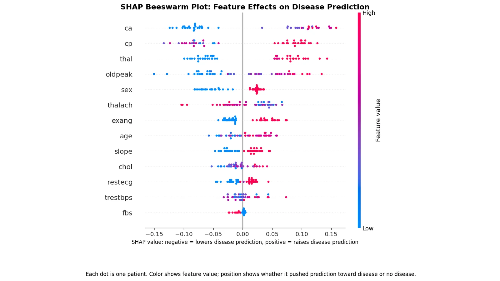
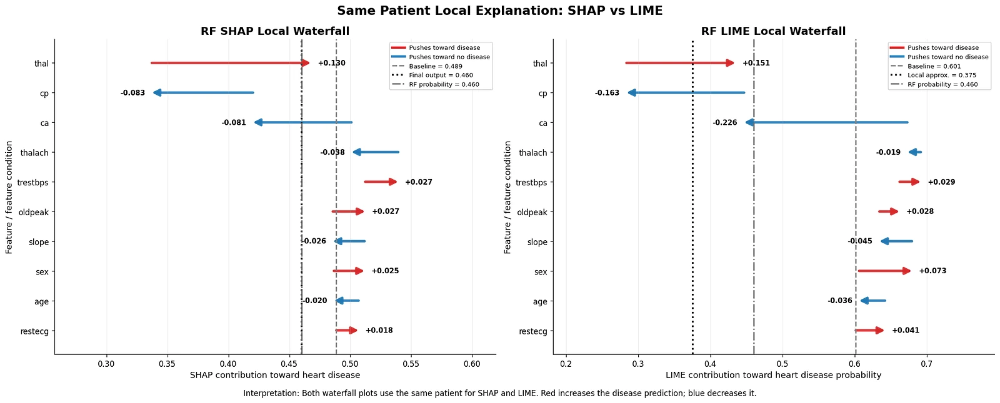

Optimise for recall
- Why
- Missing a real disease case is the costlier error in a medical setting, so tuning was scored on recall rather than accuracy.
A machine learning pipeline comparing Random Forest and Logistic Regression for heart disease risk, then asking why each model predicts what it does, using SHAP, LIME and model coefficients.

In medicine, an accurate model isn't enough; clinicians need to know why it made a prediction.
The thesis asks which model predicts heart disease risk best, and whether different explanation methods agree on what drives each prediction, both globally and for an individual patient.
Experiment pipeline
random_state=42) so results reproduce exactly.| Metric | Random Forest | Logistic Regression |
|---|---|---|
| Accuracy | 0.826 | 0.870 |
| Precision | 0.783 | 0.826 |
| Recall | 0.857 | 0.905 |
| F1-score | 0.818 | 0.864 |
| ROC-AUC | 0.903 | 0.950 |
| Rank | Feature | LR coefficient | Meaning |
|---|---|---|---|
| 1 | ca | +0.282 | Major vessels coloured by fluoroscopy |
| 2 | thal | +0.269 | Thalassemia result |
| 3 | cp | +0.203 | Chest pain type |
| 4 | exang | +0.191 | Exercise-induced angina |
| 5 | oldpeak | +0.183 | ST depression from exercise |
| 6 | thalach | −0.181 | Maximum heart rate achieved (higher → lower risk) |

thal pushes toward disease, while cp and ca push away) but differ in magnitude. That's why the thesis compares methods instead of trusting one.PredefinedSplit keeps hyperparameter choice on one fixed validation set, and the test set stays untouched until the final evaluation.